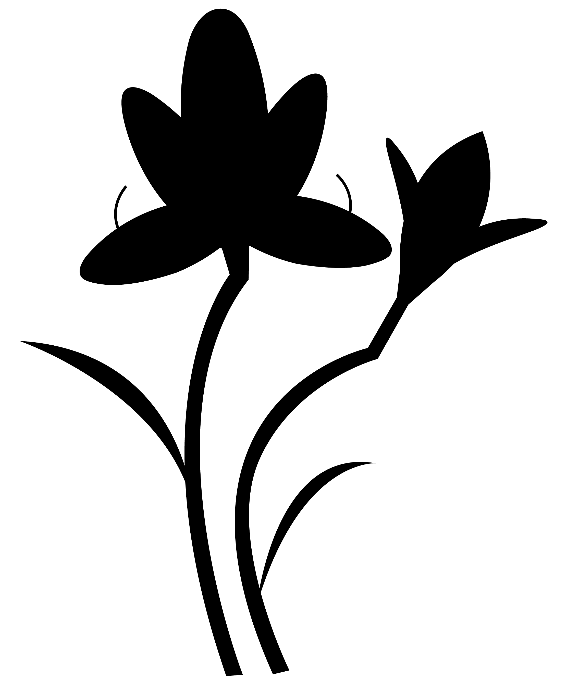

Endangered
Plants
Museum

Welcome to
Our endangered museum
멸종위기 식물 박물관은 점점 사라져가는 우리나라 멸종위기 식물들의 소중함을 알리고
함께 보존하고자하는 의미를 가지고 만들어졌습니다. 관람가이드를 따라 멸종위기 식물들을
알아보고 사라져가는 식물들을 기억 속에 예술의 형태로 오랫동안 남겨보세요.
Direction of viewing
페이지 아래 화살표를 따라가면 쉽게 관람하실 수 있습니다.
Step1
Endangered
species analysis
Step2
Introduction to
disappearing plants
Step3
Plant that will be
remembered forever
Endengered
Plants Museum
좋은 관람되시길 바랍니다.
Endangered
Species analysis
현재 우리나라에는 지구온난화, 무분별한 도시개발 및 채취 등
다양한 이유로 많은 동·식물들이 멸종위기종에 처해있습니다.
특정한 종이 멸종위기에 처할 경우 그 종의 기능이 약화되기때문에
먹이사슬 전반으로 파급되어 생태계 내 생물종 다양성에
영향을 미치고,
생태계 평형이 파괴되는 결과로 이어질 수 있습니다.
Plants at risk of
extinction
우리나라의 멸종위기종 중 가장 위험한 생물군은 육상식물입니다.
국내에 서식하고 있는 생물들을 조류, 어류, 파충류, 포유류,
무척추동물, 양서류, 식물로 분류하여 조사하였을 때 식물은 개체들 중
68% 가 시라질 위기에 처해있습니다. 특히 우리나라에만 서식하는 자생식물의
경우에는 무분별한 채취와 공해에 의해 더 빠르게 자취를 감추고있습니다.
Distribution of
endangered plants
우리나라의 멸종위기 자생식물들이 가장 많이 서식하는 곳은
전라도, 강원도와 같이 다른지역에 비해 도시개발이 활발하지 않은 지역입니다.
멸종위기 고 위험군에 속한 우리나라 자생식물을 지키고 기억하기 위해서는
멸종위기종의 생김새와 서식지를 파악하고 그들이 보존될 수 있도록 서식지를
파괴하지 않는 것 입니다. 식물마다 멸종사유는 다양하지만 무분별한 채취와
도심개발로 인한 서식지 파괴로 멸종되는 식물들은 우리가 지킬 수 있습니다.
Endengered
Plants Museum
멸종위기 식물 박물관에 전시된 식물들을 만나보세요.
Endangered
Plants
우리나라에 서식하고있는 멸종위기 식물들을 소개합니다.
도시에서는 쉽게 보지못하는 야생 식물들이기 때문에 천천히
스크롤하면서 식물의 생김새와 특징을 기억해보세요.
개체수가 매우
적은 식물들이기 때문에 국가에서 서식지를
보존하고있습니다.
5 Type of Plants
멸종위기종 1급 식물들의 모습과 이야기를 만나보세요.
나도풍란
Sedirea japonica
꽃이 아름다울 뿐만 아니라 상록성의 잎, 착생하는 습성이 있어
관상식물로서의 가치가 매우 높다.
가거도, 대흑산도, 홍도, 보길도 등 남해안 섬과 제주도에
분포했다는 기록이 존재하지만 자생지가 모두 소실되었다.
야생 종자 발아가 어려워 멸종위기종이 되었다.
비자란
Thrixspermum japonicum
제주도에서 볼 수 있는 난초과 식물로 난초 이파리에
달걀모양 노란 꽃잎이 특징이다.
제주도 및 중국, 일본에 분포하며 해발고도 250m-350m 습도 높은
지역에서 서식한다. 멸종위기 이유로는 관상을 위한 무분별채취이며
2012-2013년에 가장 큰 개체군 소멸하였다.
광릉요강꽃
Cypripedium japonicum
꽃부리가 요강을 닮아 동그란 형태를 띄고있는 것이 특징인 꽃으로
우리나라 자생식물 중 개성있고 아름다운 꽃들 중 하나이다.
해발 300 - 1,100m 산지의 양지바른 곳에 서식하며 경기도, 강원도,
충청북도, 전라북도, 전라남도 일부 지역에 분포해있다.
멸종위기 이유로는 무분별한 채취 및 낮은 결실률, 야생동물
섭식으로 보고있다.
한란
Cymbidium kanran
상록수림 아래의 그늘진 곳에서 매우 드물게 자라는 식물으로
남획에 의해 멸종 위기에 처해 있는 야생난이다.
해발 200m 내외의 상록활엽수숲 계곡부 등 제주도와
전라남도 일부 그늘진 곳에 서식한다.
암
Diapensia lapponica var. obovata
높이 5cm 정도로 자라나는 작은 떨기 나무로 방석처럼 모여
자라며 세상에서 가장 작게 자라는 나무이다.
일사량이 적고 수분이 풍부하게 유입되는 곳에서 서식하며
주도 한라산 해발 1,700m 이상 암벽지대에서 볼 수 있다.
무분별한 채취 및 기후변화에 취약한 특징으로 인해 멸종위기 종이 되었다.
Endengered
Plants Museum
멸종위기 식물 박물관에 전시된 식물들을 만나보세요.
Plants
Archiving Museum
사라질 위기에 처한 식물들을 그래픽으로 보존하는 공간입니다.
아름답고 싱그러운 식물들을 예술의 형태로 기억하여
멸종위기 식물들을 지켜보세요. 멸종위기종 1급 식물들이
아카이빙 됩니다.
그들의 형태를 감상하고 기억해주세요.
Endangered Plants
For Endangerd plants
멸종위기 식물들을 그래픽으로 만나보세요!
나도풍란
Sedirea japonica

비자란
Thrixspermum japonicum

광릉요강꽃
Cypripedium japonicum

한란
Cymbidium kanran
암매
Diapensia lapponica var. obovata